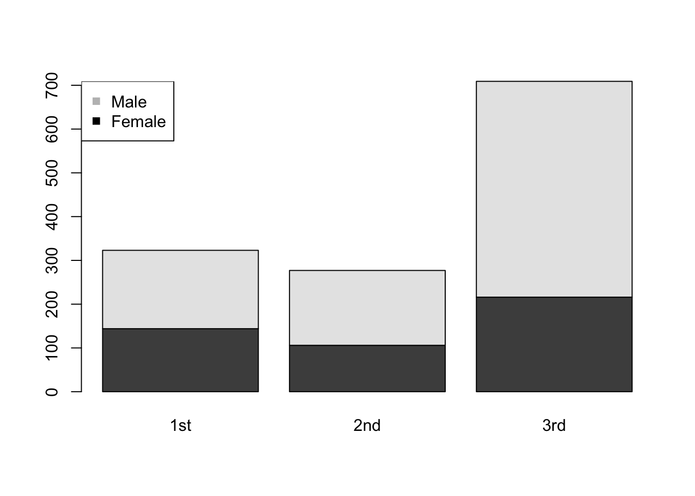
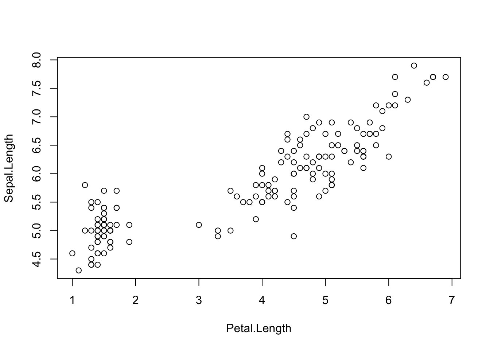
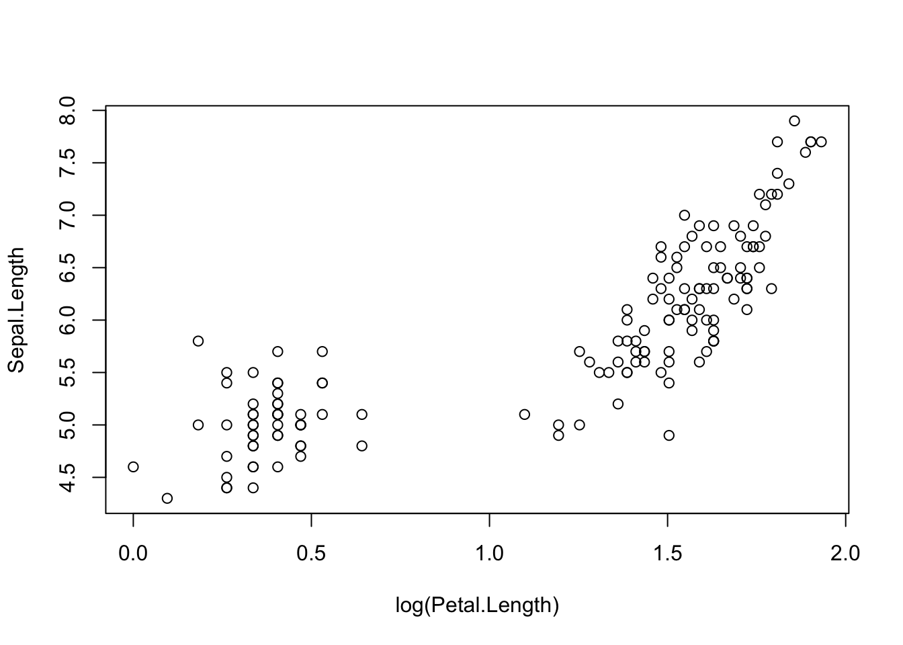
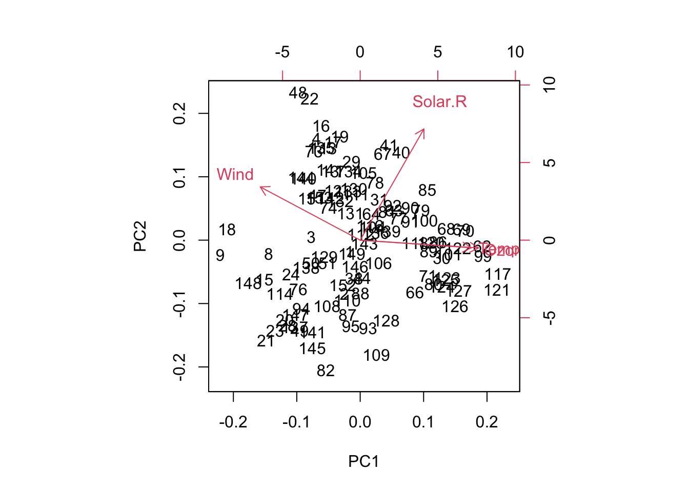
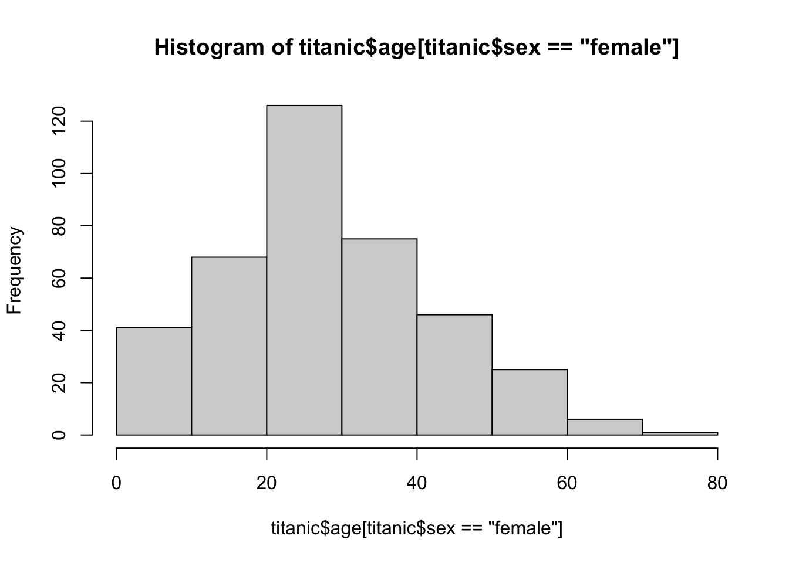
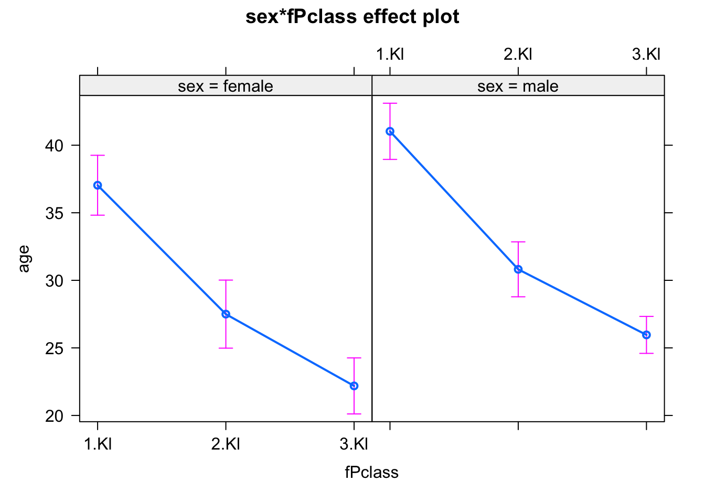
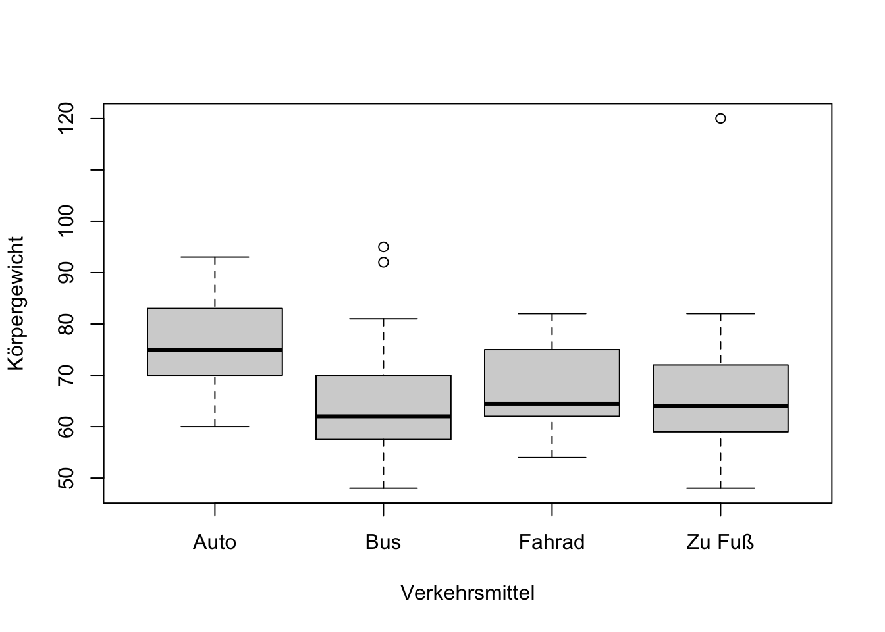
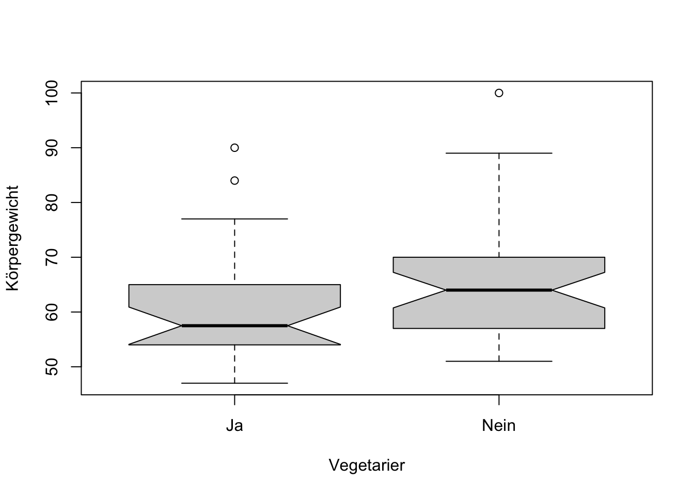

R Code der Vorlesung BSc Statistik und Bioinformatik
Woche 1 - Univariate deskriptive Statistik
Einführung R
2+2[1] 4sqrt(3)[1] 1.732051(2+2)*2[1] 8x = 5
var1 = c(1,2,3,4)
mean(var1)[1] 2.5sd(var1)[1] 1.290994# Das ist ein Kommentar
quantile(var1) 0% 25% 50% 75% 100%
1.00 1.75 2.50 3.25 4.00 var2 = factor(c("rot", "gelb", "gruen", "blau"))
class(var1)[1] "numeric"class(var2)[1] "factor"dat = data.frame(var1 = var1, var2 = var2)
# Zugriff über $
dat$var1[1] 1 2 3 4Ihre Daten
Für des Einlesen der echten Daten
daten <- read.csv("../Daten/Biostatistik Umfrage 2022.csv", stringsAsFactors = T, na.strings = c(""))
daten$Zeitstempel = NULL
colnames(daten) = c("Einwohner", "Distanz", "Körpergröße", "Körpergewicht", "Geschlecht", "Händigkeit", "Wohnform", "Verkehrsmittel", "Getränk", "Vegetarier","Studium", "CO2_Steuer", "Parkplatzgebühr", "Atomkraftwerke", "CRISPR-Cas")Code für das Einlesen der randomisierten Daten, die als csv File auf GRIPS verfügbar sind (natürlich müssten Sie den Pfad so anpassen, dass es für Ihren Computer passt).
daten = read.csv(file = "./Biostatistik Umfrage 2022 Randomisiert.csv")Verkehrsmittel
x = table(daten$Verkehrsmittel)
barplot(x)
pie(x)
Getränk
x = table(daten$Getränk)
x
Bier Cocktails / Longdrinks Tee
12 4 21
Waser Wein
27 5 barplot(x)
pie(x)
Wohnform
x = table(daten$Wohnform)
x
allein in einer großen WG > 3 Personen
26 11
in einer kleinen WG <= 3 Personen Mit Eltern
20 6
Mit Partner
7 par(mar = c(4,15,4,4))
barplot(x, las = 2, horiz = T)
Andere nominale Variablen
table(daten$Händigkeit)
Linkshänder Rechtshänder
2 68 table(daten$Vegetarier)
Ja Nein
26 44 table(daten$Geschlecht)
Männlich Weiblich
16 54 Distanz
hist(daten$Distanz, breaks = 20)
mean(daten$Distanz)[1] 165.2median(daten$Distanz)[1] 115.5sd(daten$Distanz)[1] 161.1062quantile(daten$Distanz) 0% 25% 50% 75% 100%
0.0 81.0 115.5 186.0 901.0 var(daten$Distanz)[1] 25955.21Körpergröße
hist(daten$Körpergröße, breaks = 20)mean(daten$Körpergröße)[1] 170.8714median(daten$Körpergröße)[1] 169quantile(daten$Körpergröße[daten$Geschlecht == "Weiblich"]) 0% 25% 50% 75% 100%
157.00 162.25 168.00 171.75 183.00 boxplot(daten$Körpergröße)
Woche 2 - Korrelation und Assoziation
kat ~ kat
Geschlecht ~ Getränk
x = table(daten$Geschlecht, daten$Getränk)
barplot(x, beside = T, las = 2)
mosaicplot(x)
Vegetarier ~ Geschlecht
x = table(daten$Vegetarier, daten$Geschlecht)
barplot(x, beside = T, las = 2)
mosaicplot(t(x))kat ~ num
Körpergröße~Vegetarier
boxplot(Körpergröße~Vegetarier, data = daten, notch = T)
CO2_Steuer~Geschlecht + Vegetarier
boxplot(CO2_Steuer~Geschlecht + Vegetarier, data = daten, notch = T, las = 2)Warning in (function (z, notch = FALSE, width = NULL, varwidth = FALSE, : some
notches went outside hinges ('box'): maybe set notch=FALSE
num ~ num
Körpergewicht ~ Körpergröße
plot(Körpergewicht ~ Körpergröße, data = daten)
cor(daten$Körpergröße, daten$Körpergewicht, use = "complete.obs")[1] 0.6940096cor.test(daten$Körpergröße, daten$Körpergewicht, use = "complete.obs")
Pearson's product-moment correlation
data: daten$Körpergröße and daten$Körpergewicht
t = 7.7116, df = 64, p-value = 1.04e-10
alternative hypothesis: true correlation is not equal to 0
95 percent confidence interval:
0.5432238 0.8014246
sample estimates:
cor
0.6940096 cor(daten$Körpergröße, daten$Körpergewicht, use = "complete.obs", method = "spearman")[1] 0.6714341log(Einwohner) ~ Distanz
plot(log(Einwohner) ~ Distanz, data = daten)
cor(log(daten$Einwohner), daten$Distanz)[1] 0.1234761cor(log(daten$Einwohner), daten$Distanz, method = "spearman" )[1] 0.01179438Woche 3 - Hypothesentests
Kategorisch + kategorisch
Vegetarier und Verkehrsmittel
Frage: Gibt es einen signifikanten Unterschied zwischen den Verhältnissen von Vegetarier zu nicht-Vegetarier in ihrer Wahl der Verkehrsmittel?
x = table(daten$Vegetarier, daten$Verkehrsmittel)
print(x)
Auto Bus Fahrad Zu Fuß
Ja 0 15 8 3
Nein 5 21 9 9Visualisierung via boxplot/barplot:
barplot(x, beside = T)
Test: prop.test
H0: Gleiche Verhältnisse (Veg/Non-Veg) in mehreren Gruppen (Verkehrsmittel).
prop.test(t(x))Warning in prop.test(t(x)): Chi-squared approximation may be incorrect
4-sample test for equality of proportions without continuity correction
data: t(x)
X-squared = 4.7439, df = 3, p-value = 0.1915
alternative hypothesis: two.sided
sample estimates:
prop 1 prop 2 prop 3 prop 4
0.0000000 0.4166667 0.4705882 0.2500000 p-value = 0.7936 und damit größer als unser Signifikanzniveau \(\alpha\) = 0.05 und wir lehnen die H0 nicht ab, d.h. die Unterschiede zwischen den verschiedenen Verhältnissen ist nicht signifikant
Geschlecht und Vegetarier
Frage: Gibt es einen signifikanten Unterschied zwischen den Verhältnissen von Vegetarier zu nicht-Vegetarier in Abhaengigkeit des Geschlechtes?
x = table(daten$Geschlecht, daten$Vegetarier)
print(x)
Ja Nein
Männlich 3 13
Weiblich 23 31Visualisierung via boxplot/barplot:
barplot(x, beside = T, las = 2)
Test: prop.test
H0: Gleiche Verhältnisse (Veg/Non-Veg) in mehreren Gruppen (Geschlecht-W, Geschlecht-M).
prop.test(x)
2-sample test for equality of proportions with continuity correction
data: x
X-squared = 2.0709, df = 1, p-value = 0.1501
alternative hypothesis: two.sided
95 percent confidence interval:
-0.51125090 0.03439904
sample estimates:
prop 1 prop 2
0.1875000 0.4259259 p-value = 0.359 und damit größer als unser Signifikanzniveau \(\alpha\) = 0.05 und wir lehnen die H0 nicht ab, d.h. die Unterschiede zwischen den verschiedenen Verhältnissen ist nicht signifikant
Kategorisch + Numerisch
Körpergröße ~ Geschlecht
Frage: Gibt es einen signifikanten Unterschied in der Körpergröße in Abhängigkeit des Geschlechtes?
Visualisierung via boxplot
boxplot(Körpergröße ~ Geschlecht, data = daten, col = "lightgrey")Wir können von einem normalen Boxplot nicht ablesen, ob der Unterschied signifikant ist! Wieso? Es fehlen essenzielle Informationen wie die Standardabweichung/Varianz der Mittelwerte!
Test: t-Test
Bevor wir den t-Test jedoch anwenden können, müssen wir erst prüfen ob die Normalverteilungsannahme der Körpergrößen in den zwei Geschlechtskategorieren erfüllt ist.
Shapiro-Wilk test
Shapiro-Wilk testet auf Normalverteilung, d.h. die H0 ist dass die Daten normalverteilt sind. Ist der shapiro test signifikant, lehnen wir die H0 ab und akzeptieren die alternativ Hypothese dass die Daten nicht normalverteilt sind:
shapiro.test(daten$Körpergröße[daten$Geschlecht == "Weiblich"])
Shapiro-Wilk normality test
data: daten$Körpergröße[daten$Geschlecht == "Weiblich"]
W = 0.97189, p-value = 0.2331shapiro.test(daten$Körpergröße[daten$Geschlecht == "Männlich"])
Shapiro-Wilk normality test
data: daten$Körpergröße[daten$Geschlecht == "Männlich"]
W = 0.96729, p-value = 0.7931p-values \(>0.05\) und damit lehnen wir H0 nicht ab, gehen von Normalverteilungen aus und können den t-test anwenden
T-test
H0: Kein Unterschied in den Mittelwerten, d.h. gleiche Körpergrößen
?t.test
t.test(Körpergröße ~ Geschlecht, data = daten)
Welch Two Sample t-test
data: Körpergröße by Geschlecht
t = 6.5281, df = 20.933, p-value = 1.847e-06
alternative hypothesis: true difference in means between group Männlich and group Weiblich is not equal to 0
95 percent confidence interval:
9.332623 18.060895
sample estimates:
mean in group Männlich mean in group Weiblich
181.4375 167.7407 Der p-value entspricht 0.1526 und ist damit \(>0.05\). Wir lehnen deshalb die H0 nicht ab und unsere Aussage ist “Der Unterschied in den Körpergrößen von und weiblichen Studierenden war nicht signifikant (t-test, p = 0.1526)”
Nur weil ein Effekt nicht signifikant ist, heißt das nicht, dass es keinen Effekt gibt! Denken Sie an die Vorlesung! Das heißt es wäre falsch etwas wie “es gibt keinen Unterschied zwischen männlichen und weiblichen Studierenden zu schreiben”, der Unterschied beträgt 2.99 ist aber statistisch nicht signifikant.
Körpergröße ~ Händigkeit
Frage: Gibt es einen signifikanten Unterschied in der Körpergröße in Abhaengigkeit der Händigkeit?
Mit `library(‘Name-der-library’) können wir zusätzliche Funktionen laden (ähnlich wie wenn sie in einem Betriebssystem eine zusätzliche Software öffnen und verwenden).
Visualisierung:
library(beeswarm)
boxplot(Körpergröße ~ Händigkeit, data = daten, notch = T, col = "lightgrey")Warning in (function (z, notch = FALSE, width = NULL, varwidth = FALSE, : some
notches went outside hinges ('box'): maybe set notch=FALSEbeeswarm(Körpergröße ~ Händigkeit, data = daten, add = T, pwcol = daten$Geschlecht)
H0: Kein Unterschied.
t.test(Körpergröße ~ Händigkeit, data = daten)
Welch Two Sample t-test
data: Körpergröße by Händigkeit
t = -1.4191, df = 1.1128, p-value = 0.3731
alternative hypothesis: true difference in means between group Linkshänder and group Rechtshänder is not equal to 0
95 percent confidence interval:
-52.92639 39.80874
sample estimates:
mean in group Linkshänder mean in group Rechtshänder
164.5000 171.0588 und damit signifikant, d.h. wir lehnen die H0 ab und wir schreiben “Der Unterschied in der Körpergröße von Linkshändern und Rechtshändern ist signifikant (t-test, p=5.99E-06)”
p-Wert würde kleiner wenn man ein-seitig testet, sollte man aber nur a priori und nicht auf Grundlage der Plots machen, weil letzteres verdecktes multiples Testen ist
t.test(Körpergröße ~ Händigkeit, data = daten, alternative = "less")
Welch Two Sample t-test
data: Körpergröße by Händigkeit
t = -1.4191, df = 1.1128, p-value = 0.1866
alternative hypothesis: true difference in means between group Linkshänder and group Rechtshänder is less than 0
95 percent confidence interval:
-Inf 18.08185
sample estimates:
mean in group Linkshänder mean in group Rechtshänder
164.5000 171.0588 Numerisch+Numerisch
Körpergröße ~ Einwohner
Visualisierung via scatterplot:
plot(Körpergröße ~ Einwohner, data =daten)Berechnen wir den Pearson Korrelationsfaktor:
cor(daten$Einwohner, daten$Körpergröße, use = "complete.obs")[1] 0.06165126Schwache Korrelation, ist sie signifikant? Wir können die cor.test hernehmen um einen Korrelationstest zu berechnen (H0: Korrelation = 0):
cor.test(daten$Einwohner, daten$Körpergröße, use = "complete.obs")
Pearson's product-moment correlation
data: daten$Einwohner and daten$Körpergröße
t = 0.50936, df = 68, p-value = 0.6122
alternative hypothesis: true correlation is not equal to 0
95 percent confidence interval:
-0.1758705 0.2923896
sample estimates:
cor
0.06165126 p-value ist \(>\) 0.05 und damit ist die Korrelation nicht signifikant.
Ein kleiner Ausblick auf die kommenden Wochen: wir koennen die sogenannte lineare Regression ( \(y = mx + t\) ) dazu nutzen um die Assoziation von Koerpergrosse ~ Einwohner durch eine Gerade darzustellen. D.h. in der linearen Regression werden die zwei Parameter \(m\) (Steigung) und \(t\) (Achsenabschnitt) geschätzt:
fit <- lm(Körpergröße ~ Einwohner, data =daten)
plot(Körpergröße ~ Einwohner, data =daten)
abline(fit, col = "red", lwd = 2)
Statistische power
Die Power wird zum Beispiel von der standardabweichung/varianz der Daten beeinflusst:
sd(daten$Körpergröße)[1] 8.674336nehme vereinfacht an, dass 4 Beobachten je Gruppe gab. Ungleiche Gruppen hat die Funktion leider nicht. Wie viel n bräuchten wir bei der gegeben Streuung, um für einen Effekt von delta = 2 eine Power von 80% zu erreichen?
power.t.test(delta = 2, sd = 8, power = 0.8)
Two-sample t test power calculation
n = 252.1281
delta = 2
sd = 8
sig.level = 0.05
power = 0.8
alternative = two.sided
NOTE: n is number in *each* groupdelta = wahre Unterschied der Gruppen
Woche 4 - MLE und Regression
num + num
Körpergewicht ~ Körpergröße
plot(daten$Körpergröße, daten$Körpergewicht)
cor.test(daten$Körpergewicht, daten$Körpergröße,
use = "complete.obs", method = "spearman")Warning in cor.test.default(daten$Körpergewicht, daten$Körpergröße, : Cannot
compute exact p-value with ties
Spearman's rank correlation rho
data: daten$Körpergewicht and daten$Körpergröße
S = 15740, p-value = 6.811e-10
alternative hypothesis: true rho is not equal to 0
sample estimates:
rho
0.6714341 Lineare Regression
fit <- lm(Körpergewicht ~ Körpergröße, data = daten)
summary(fit)
Call:
lm(formula = Körpergewicht ~ Körpergröße, data = daten)
Residuals:
Min 1Q Median 3Q Max
-12.454 -6.085 -1.091 3.610 31.346
Coefficients:
Estimate Std. Error t value Pr(>|t|)
(Intercept) -88.4489 19.8080 -4.465 3.32e-05 ***
Körpergröße 0.8909 0.1155 7.712 1.04e-10 ***
---
Signif. codes: 0 '***' 0.001 '**' 0.01 '*' 0.05 '.' 0.1 ' ' 1
Residual standard error: 8.148 on 64 degrees of freedom
(4 observations deleted due to missingness)
Multiple R-squared: 0.4816, Adjusted R-squared: 0.4736
F-statistic: 59.47 on 1 and 64 DF, p-value: 1.04e-10Visualisierung
plot(daten$Körpergröße, daten$Körpergewicht)
abline(fit, col = "red")
alternative Visualisierung
library(effects)Loading required package: carDatalattice theme set by effectsTheme()
See ?effectsTheme for details.plot(allEffects(fit, partial.residuals = T))
Körpergewicht ~ Einwohner
plot(daten$Einwohner, daten$Körpergewicht)
fit <- lm(Körpergewicht ~ Einwohner, data = daten)
summary(fit)
Call:
lm(formula = Körpergewicht ~ Einwohner, data = daten)
Residuals:
Min 1Q Median 3Q Max
-17.353 -9.276 -1.320 5.643 35.672
Coefficients:
Estimate Std. Error t value Pr(>|t|)
(Intercept) 6.436e+01 1.463e+00 43.977 <2e-16 ***
Einwohner -1.405e-06 2.571e-06 -0.546 0.587
---
Signif. codes: 0 '***' 0.001 '**' 0.01 '*' 0.05 '.' 0.1 ' ' 1
Residual standard error: 11.29 on 64 degrees of freedom
(4 observations deleted due to missingness)
Multiple R-squared: 0.004645, Adjusted R-squared: -0.01091
F-statistic: 0.2987 on 1 and 64 DF, p-value: 0.5866library(effects)
plot(allEffects(fit, partial.residuals = T))
num + kat
boxplot(Körpergewicht ~ Geschlecht, data = daten, notch = T)Warning in (function (z, notch = FALSE, width = NULL, varwidth = FALSE, : some
notches went outside hinges ('box'): maybe set notch=FALSE
fit <- lm(Körpergewicht ~ Geschlecht, data = daten)
summary(fit)
Call:
lm(formula = Körpergewicht ~ Geschlecht, data = daten)
Residuals:
Min 1Q Median 3Q Max
-12.50 -5.25 -1.50 5.25 24.50
Coefficients:
Estimate Std. Error t value Pr(>|t|)
(Intercept) 78.500 1.932 40.641 < 2e-16 ***
GeschlechtWeiblich -19.000 2.219 -8.562 3.31e-12 ***
---
Signif. codes: 0 '***' 0.001 '**' 0.01 '*' 0.05 '.' 0.1 ' ' 1
Residual standard error: 7.726 on 64 degrees of freedom
(4 observations deleted due to missingness)
Multiple R-squared: 0.5339, Adjusted R-squared: 0.5266
F-statistic: 73.3 on 1 and 64 DF, p-value: 3.311e-12library(effects)
plot(allEffects(fit, partial.residuals = T))
boxplot(Körpergewicht ~ Verkehrsmittel, data = daten, notch = T)Warning in (function (z, notch = FALSE, width = NULL, varwidth = FALSE, : some
notches went outside hinges ('box'): maybe set notch=FALSEfit <- lm(Körpergewicht ~ Verkehrsmittel, data = daten)
summary(fit)
Call:
lm(formula = Körpergewicht ~ Verkehrsmittel, data = daten)
Residuals:
Min 1Q Median 3Q Max
-16.657 -8.333 -2.995 4.924 36.343
Coefficients:
Estimate Std. Error t value Pr(>|t|)
(Intercept) 73.800 4.974 14.838 <2e-16 ***
VerkehrsmittelBus -10.143 5.317 -1.908 0.0611 .
VerkehrsmittelFahrad -11.467 5.743 -1.997 0.0503 .
VerkehrsmittelZu Fuß -10.255 5.999 -1.710 0.0924 .
---
Signif. codes: 0 '***' 0.001 '**' 0.01 '*' 0.05 '.' 0.1 ' ' 1
Residual standard error: 11.12 on 62 degrees of freedom
(4 observations deleted due to missingness)
Multiple R-squared: 0.06436, Adjusted R-squared: 0.01909
F-statistic: 1.422 on 3 and 62 DF, p-value: 0.245ANOVA
summary(aov(fit)) Df Sum Sq Mean Sq F value Pr(>F)
Verkehrsmittel 3 528 175.8 1.422 0.245
Residuals 62 7669 123.7
4 observations deleted due to missingnessWoche 5 - Multiple Regression
Dienstag
Beispiel multiple Regression
fit <- lm(Ozone ~ Temp + Wind, data = airquality)
summary(fit)
Call:
lm(formula = Ozone ~ Temp + Wind, data = airquality)
Residuals:
Min 1Q Median 3Q Max
-41.251 -13.695 -2.856 11.390 100.367
Coefficients:
Estimate Std. Error t value Pr(>|t|)
(Intercept) -71.0332 23.5780 -3.013 0.0032 **
Temp 1.8402 0.2500 7.362 3.15e-11 ***
Wind -3.0555 0.6633 -4.607 1.08e-05 ***
---
Signif. codes: 0 '***' 0.001 '**' 0.01 '*' 0.05 '.' 0.1 ' ' 1
Residual standard error: 21.85 on 113 degrees of freedom
(37 observations deleted due to missingness)
Multiple R-squared: 0.5687, Adjusted R-squared: 0.5611
F-statistic: 74.5 on 2 and 113 DF, p-value: < 2.2e-16Vergleich einfache Regression
fit <- lm(Ozone ~ Temp , data = airquality)
summary(fit)
Call:
lm(formula = Ozone ~ Temp, data = airquality)
Residuals:
Min 1Q Median 3Q Max
-40.729 -17.409 -0.587 11.306 118.271
Coefficients:
Estimate Std. Error t value Pr(>|t|)
(Intercept) -146.9955 18.2872 -8.038 9.37e-13 ***
Temp 2.4287 0.2331 10.418 < 2e-16 ***
---
Signif. codes: 0 '***' 0.001 '**' 0.01 '*' 0.05 '.' 0.1 ' ' 1
Residual standard error: 23.71 on 114 degrees of freedom
(37 observations deleted due to missingness)
Multiple R-squared: 0.4877, Adjusted R-squared: 0.4832
F-statistic: 108.5 on 1 and 114 DF, p-value: < 2.2e-16Die Unterschiede in den Effektschätzern entstehen durch die Kollinearität zwischen Wind und Temperatur
plot(Temp ~ Wind, data = airquality)
Donnerstag
Beispiel LRT
ratios = rep(NA, 1000)
for(i in 1:1000){
# erzeuge Daten ohne Abhängigkeit
x = rnorm(100)
y = rnorm(100)
# vergleiche Log Likelihood M1 = y ~ x , M0 = y ~ 1
ratios[i] = logLik(lm(y ~ x)) - logLik(lm(y ~ 1))
}
hist(ratios, breaks = 100)
Analyse Ihrer Daten
Körpergewicht ~ Vegetarier
Einfache Regression
plot(Körpergewicht ~ Vegetarier, data =daten, col = "lightgrey", notch = T)
fit <- lm(Körpergewicht ~ Vegetarier, data =daten)
summary(fit)
Call:
lm(formula = Körpergewicht ~ Vegetarier, data = daten)
Residuals:
Min 1Q Median 3Q Max
-14.725 -7.615 -2.725 4.275 34.275
Coefficients:
Estimate Std. Error t value Pr(>|t|)
(Intercept) 61.615 2.183 28.224 <2e-16 ***
VegetarierNein 4.110 2.804 1.466 0.148
---
Signif. codes: 0 '***' 0.001 '**' 0.01 '*' 0.05 '.' 0.1 ' ' 1
Residual standard error: 11.13 on 64 degrees of freedom
(4 observations deleted due to missingness)
Multiple R-squared: 0.03247, Adjusted R-squared: 0.01735
F-statistic: 2.148 on 1 and 64 DF, p-value: 0.1477Könnte Scheinkorrelation sein wegen Vegetarier ~ Geschlecht, deshalb multiple Regression
fit <- lm(Körpergewicht ~ Vegetarier + Geschlecht, data =daten)
summary(fit)
Call:
lm(formula = Körpergewicht ~ Vegetarier + Geschlecht, data = daten)
Residuals:
Min 1Q Median 3Q Max
-12.525 -5.211 -1.495 5.197 24.573
Coefficients:
Estimate Std. Error t value Pr(>|t|)
(Intercept) 78.3906 2.5464 30.785 < 2e-16 ***
VegetarierNein 0.1346 2.0202 0.067 0.947
GeschlechtWeiblich -18.9633 2.3034 -8.233 1.4e-11 ***
---
Signif. codes: 0 '***' 0.001 '**' 0.01 '*' 0.05 '.' 0.1 ' ' 1
Residual standard error: 7.787 on 63 degrees of freedom
(4 observations deleted due to missingness)
Multiple R-squared: 0.5339, Adjusted R-squared: 0.5191
F-statistic: 36.08 on 2 and 63 DF, p-value: 3.605e-11Körpergewicht ~ Verkehrsmittel
boxplot(Körpergewicht ~ Verkehrsmittel, data =daten)fit <- lm(Körpergewicht ~ Verkehrsmittel, data =daten)
summary(fit)
Call:
lm(formula = Körpergewicht ~ Verkehrsmittel, data = daten)
Residuals:
Min 1Q Median 3Q Max
-16.657 -8.333 -2.995 4.924 36.343
Coefficients:
Estimate Std. Error t value Pr(>|t|)
(Intercept) 73.800 4.974 14.838 <2e-16 ***
VerkehrsmittelBus -10.143 5.317 -1.908 0.0611 .
VerkehrsmittelFahrad -11.467 5.743 -1.997 0.0503 .
VerkehrsmittelZu Fuß -10.255 5.999 -1.710 0.0924 .
---
Signif. codes: 0 '***' 0.001 '**' 0.01 '*' 0.05 '.' 0.1 ' ' 1
Residual standard error: 11.12 on 62 degrees of freedom
(4 observations deleted due to missingness)
Multiple R-squared: 0.06436, Adjusted R-squared: 0.01909
F-statistic: 1.422 on 3 and 62 DF, p-value: 0.245Auch hier haben wir nach Diskussion in der Klasse überlegt, ob dies eine Scheinkorrelation sein könnte, wegen Verkehrsmittel ~ Geschlecht, ev. Distanz.
Multiple Regression und Kreuztabelle bestätigt das
fit <- lm(Körpergewicht ~ Verkehrsmittel + Geschlecht + Distanz, data =daten)
summary(fit)
Call:
lm(formula = Körpergewicht ~ Verkehrsmittel + Geschlecht + Distanz,
data = daten)
Residuals:
Min 1Q Median 3Q Max
-12.854 -5.602 -1.084 4.129 23.293
Coefficients:
Estimate Std. Error t value Pr(>|t|)
(Intercept) 82.824000 3.729507 22.208 < 2e-16 ***
VerkehrsmittelBus -2.860039 3.803256 -0.752 0.455
VerkehrsmittelFahrad -5.855272 4.079951 -1.435 0.156
VerkehrsmittelZu Fuß -2.996018 4.288149 -0.699 0.487
GeschlechtWeiblich -18.420651 2.296416 -8.021 4.5e-11 ***
Distanz -0.008448 0.005898 -1.432 0.157
---
Signif. codes: 0 '***' 0.001 '**' 0.01 '*' 0.05 '.' 0.1 ' ' 1
Residual standard error: 7.716 on 60 degrees of freedom
(4 observations deleted due to missingness)
Multiple R-squared: 0.5642, Adjusted R-squared: 0.5279
F-statistic: 15.53 on 5 and 60 DF, p-value: 8.736e-10table(daten$Geschlecht, daten$Verkehrsmittel)
Auto Bus Fahrad Zu Fuß
Männlich 3 7 4 2
Weiblich 2 29 13 10Final noch ein Beispiel für die Modellselektion - Geschlecht wird selektiert, eine zufällige Variable nicht.
daten$random = rnorm(nrow(daten))
M0 <- lm(Körpergewicht ~ Verkehrsmittel, data =daten)
M1 <- lm(Körpergewicht ~ Verkehrsmittel + Geschlecht , data =daten)
M2 <- lm(Körpergewicht ~ Verkehrsmittel + random , data =daten)
summary(aov(M2)) Df Sum Sq Mean Sq F value Pr(>F)
Verkehrsmittel 3 528 175.84 1.399 0.252
random 1 0 0.02 0.000 0.989
Residuals 61 7669 125.72
4 observations deleted due to missingnessAIC(M0)[1] 511.1466AIC(M1)[1] 464.9424AIC(M2)[1] 513.1464Woche 6 - GLM
Dienstag
Interessieren uns für die Assoziazion Veg ~ Geschlecht. Erinnerung: deskriptiv über Kreuztabelle + gruppiertes Balkendiagram
x = table(daten$Vegetarier, daten$Geschlecht)
x
Männlich Weiblich
Ja 3 23
Nein 13 31barplot(x, beside = T)Könnten einen Hypothesentest machen
prop.test(x)
2-sample test for equality of proportions with continuity correction
data: x
X-squared = 2.0709, df = 1, p-value = 0.1501
alternative hypothesis: two.sided
95 percent confidence interval:
-0.3930226 0.0328827
sample estimates:
prop 1 prop 2
0.1153846 0.2954545 Aber regression ist allgeiner. Abhängige Variable ist 0/1, deshalb logische Regression:
fit <- glm(Vegetarier ~ Geschlecht,
family = "binomial",
data = daten)
summary(fit)
Call:
glm(formula = Vegetarier ~ Geschlecht, family = "binomial", data = daten)
Deviance Residuals:
Min 1Q Median 3Q Max
-1.8297 -1.3065 0.6444 1.0536 1.0536
Coefficients:
Estimate Std. Error z value Pr(>|z|)
(Intercept) 1.4663 0.6405 2.289 0.0221 *
GeschlechtWeiblich -1.1678 0.6971 -1.675 0.0939 .
---
Signif. codes: 0 '***' 0.001 '**' 0.01 '*' 0.05 '.' 0.1 ' ' 1
(Dispersion parameter for binomial family taken to be 1)
Null deviance: 92.360 on 69 degrees of freedom
Residual deviance: 89.113 on 68 degrees of freedom
AIC: 93.113
Number of Fisher Scoring iterations: 4Beispiele Transformation der Regressionstabelle auf Vorhersagen (Response):
plogis(1.47) # Männer[1] 0.8130574plogis(1.47-1.17) # Frauen[1] 0.5744425Visualisierung:
library(effects)
plot(allEffects(fit))Multiples GLM
fit <- glm(Vegetarier ~ Geschlecht + Körpergewicht,
family = "binomial",
data = daten)
summary(fit)
Call:
glm(formula = Vegetarier ~ Geschlecht + Körpergewicht, family = "binomial",
data = daten)
Deviance Residuals:
Min 1Q Median 3Q Max
-1.8423 -1.2414 0.6469 1.1073 1.1188
Coefficients:
Estimate Std. Error z value Pr(>|z|)
(Intercept) 1.27413 2.81949 0.452 0.651
GeschlechtWeiblich -1.25958 0.96350 -1.307 0.191
Körpergewicht 0.00245 0.03504 0.070 0.944
(Dispersion parameter for binomial family taken to be 1)
Null deviance: 88.503 on 65 degrees of freedom
Residual deviance: 84.432 on 63 degrees of freedom
(4 observations deleted due to missingness)
AIC: 90.432
Number of Fisher Scoring iterations: 4Visualisierung:
library(effects)
plot(allEffects(fit))